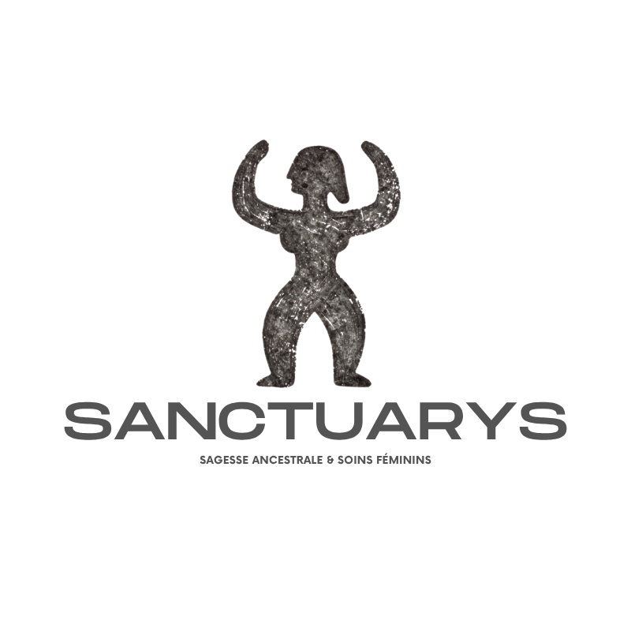

Sagesse ancestrale et accompagnement holistique. Sanctuarys forme et accompagne les facilitatrices en soin féminin.
Ton journal, ton calendrier, tes ressources, ta messagerie avec ta formatrice. Tout ton parcours V-Care en un seul lieu.
Ton Temple intérieur : cycle, séances YoniSpa, journal, événements, parrainage. Réservé aux 123 Fondatrices du Club.
Le suivi de tes élèves, leurs journaux, vos échanges, la création de nouveaux dossiers. L'espace de pilotage Sanctuarys.